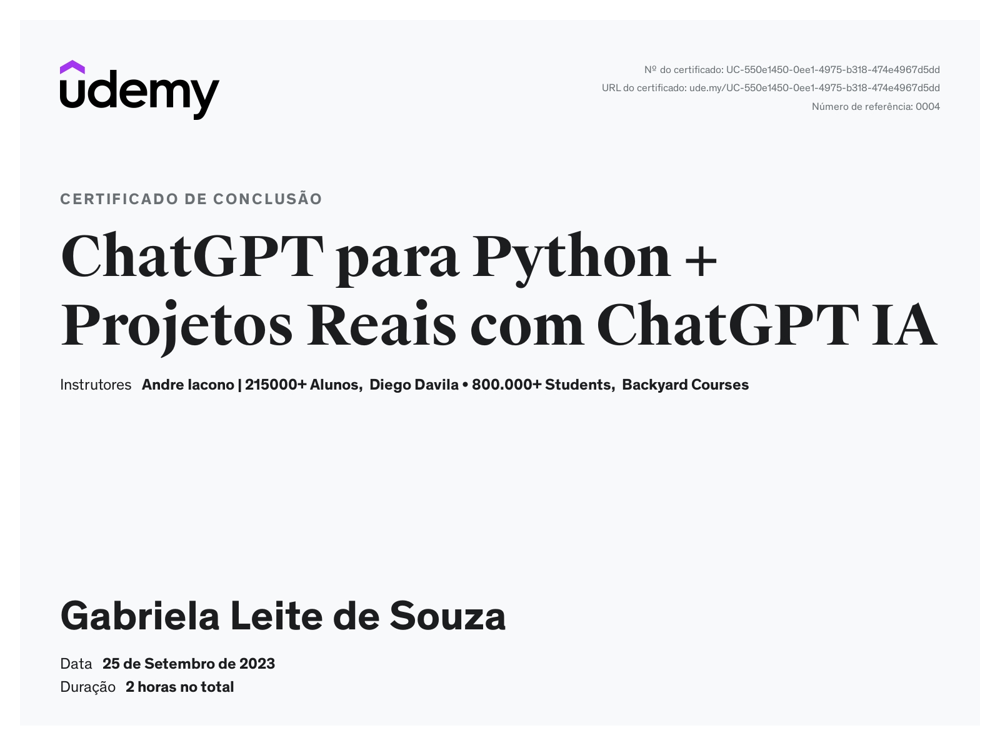

Meu nome é Gabriela Leite, nasci em 1997 e sou Tradutora e Intérprete en <> pt-BR formada pela
Universidade Católica de Santos (UniSantos).
Meu interesse pela área da Tecnologia da Informação começou no início da adolescência com a
febre do Tumblr, em que a meta era ter um tema estilizado para o site, e desde essa época eu
me aventuro em HTML e CSS.
Além da tecnologia, tenho um enorme interesse em conhecer novos lugares e culturas de todo o
mundo.
Início da jornada
O início da minha jornada com tech, como disse acima, começou na pré-adolescência. Mas o início
da minha jornada com o ElasNaTech veio "de casa".
Ano passado, minha mãe fez parte da primeira edição do programa, e eu sempre prestava atenção
passiva nas aulas. Foi quando ressurgiu meu interesse na área e onde eu quis saber um pouco mais
sobre meu antigo hobby.
E então, surgiu a oportunidade: o programa fez tanto sucesso que abriram inscrições para a
segunda edição. Então, sem pensar duas vezes e com incentivo da minha mãe, fiz minha
matrícula e hoje tenho certeza de que foi a escolha certa.
Desafios
Durante o curso, sempre enfrentamos alguns desafios que podem atrapalhar nosso aprendizado. Alguns dos
desafios pelos quais eu passei incluem:
Falta de conhecimento na área
Com certeza, um dos maiores que enfrentei logo no começo da jornada foi a falta de conhecimento
específico. Aprender algo novo pela primeira vez e entender que no começo você vai falhar é
difícil, mas com foco e persistência, chegamos ao projeto final!
Aulas on-line e rotina
Ajustar minha rotina de trabalho e vida social com o curso também foi um pouco difícil, já que
não era apenas "1h por semana". Além da aula on-line, tínhamos que completar muitos outros
cursos paralelos para complementar as aulas, o que demandava tempo, atenção e dedicação.
Paciência e testes… Muitos testes
Não tem segredo: programar exige muitos e muitos testes para garantir que tudo saia como
planejado. Muitas vezes me sentia extremamente frustrada por não ter o código final da maneira
que visualizei. Mas aprendi a respirar fundo, manter a calma e testar de novo.
Conquistas
Alguns dos cursos que completei durante o programa

Aprendizados
No curso, aprendi muito mais do que poderia imaginar. Apesar de ver muitos termos de lógica de programação no meu trabalho, meu conhecimento não era muito apronfundado. Tive a oportunidade de aprender sobre HTML, CSS, JavaScript (não só "Java"!), Python, Git, Github. Todos os desafios que fizemos durante as aulas, alguns dos quais você pode conferir na próxima seção, demonstram o quanto eu evolui longo do curso. Todos os elementos deste projeto de portfólio têm um pouquinho de cada desafio. Aprendi como criar um site responsivo, como estilizar sites e como adicionar JavaScript para obter resultados mais interativos, além de aprender a ter mais paciência e comemorar cada pequena conquista durante um projeto (como, por exemplo, acertar a posição de um simples botão). São ensinamentos que vou levar e aplicar na minha vida pessoal e profissional.
Projetos
Projetos desenvolvidos ao longo do curso, do mais recente ao mais antigo.
PROJETO 13
Os principais desafios deste projeto eram: criar o menu hambúrguer em dispositivos com tela menor, alterar a direção dos ícones do footer (de horizontal para vertical em telas menores) e manter o design responsivo, além de manter o plano de fundo.
O desafio era criar uma calculadora com JavaScript. A calculadora tinha que realizar algumas funções básicas, como adição, subtração, multiplicação e divisão, além de mostrar o resultado final da conta e limpar os dados inseridos.
O primeiro projeto com JavaScript que fizemos. O site deveria criar várias caixas de diálogo. A primeira caixa era para que o usuáro digitasse seu nome e, logo em seguida, a segunda caixa era de confirmação. Então, a caixa seguinte pedia um número, e os requisitos desse número deviam ser: precisa ser um número inteiro, par e estar abaixo de 100.
O desafio era criar um site responsivo. As configurações do site para telas maiores deveria ter o trailer do filme, duas colunas de articles, menu no topo da página e ícones com transições. Para telas menores, o menu deveria ser reduzido, o vídeo deveria ser substituído por um botão e os articles ficarem em uma só coluna.
O primeiro projeto responsivo. Nele, as divs com imagens e legenda precisavam ter dois layouts: para telas maiores, estar na horizontal e em telas menores, na vertical. Além disso, as imagens deveriam se encaixar na tela, independente do tamanho.
Primeiro projeto com flexbox. Neste projeto, precisávamos criar um site com um menu simples e nove imagens monocromáticas. As imagens precisavam de uma transição para o preto e branco ao passar o mouse em cima. Além disso, as imagens precisavam manter seu tamanho ao diminuir o tamanho da janela de navegação.
A proposta deste projeto era criar um menu simples, com a imagem, nome, descrição e preço de um prato no seu restaurante fictício. Também era preciso ter links para sites externos.
Um projeto opcional no qual podíamos escolher uma mulher que teve grande importância para o desenvolvimento da tecnologia e fazer uma pequena página sobre.
Que jornada! Comecei o Elas Na Tech com a professora Juliana e a monitora Vanessa, e depois mudei para a Turma 10 da professora Gil e monitora Érika, então meu relato vai ser mais sobre minha segunda turma.
Acho que fica nítido que o Elas Na Tech é mais que só um programa, é uma comunidade de apoio que ajuda e engrandece cada uma de nós nesse meio que é tão dominado por homens. É tão lindo ver que não estamos sozinhas e que podemos contar umas com as outras.
Sempre fiquei mais quietinha nas aulas, sempre absorvendo todo o conteúdo que a professora Gil passava de forma tão concisa e prática. Era incrível chegar um pouquinho mais cedo e passar um tempinho ouvindo música com a Érika e ver todas as meninas chegando e começando a conversar tão abertamente.
Em vários momentos quase desisti do curso, ficava desesperada com os códigos, estressadíssima, mas sempre senti que tive apoio e ajuda dessa nossa comunidade. Eu adorava e vou sentir muita falta de ver os desafios das meninas, de ver tantas soluções diferentes para os mesmos problemas, de ver tantas abordagens distintas e projetos "lindos de bonitos".
O Elas Na Tech é um programa que eu com certeza indico de olhos fechados para qualquer guria. Sou muito grata pela oportunidade e extremamente grata à profª Gil e à monitora Érika, que se esforçaram tanto para tornar nossa experiência tão única, divertida e repleta de ensinamentos.
Abaixo coloquei um vídeo de uma parte do processo de criação deste site para mostrar que o começo é triste, xôxo, capenga, manco, frágil e inconsistente, mas necessário para evoluirmos.


.png)
.png)